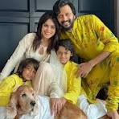
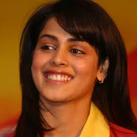
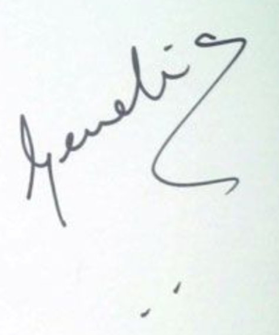

Genelia D'Souza is an Indian actress, model, and host. She has appeared in Telugu, Hindi, Tamil, Kannada, and Malayalam language films. After gaining wide attention in a Parker Pen commercial with Amitabh Bachchan, D'Souza began her acting career with Tujhe Meri Kasam in 2003. She was recognized for her role in Boys the same year, and later established herself in Telugu cinema by acting in several Telugu films during 2003-2005. D'Souza received her first Filmfare Award in 2006 for her performance in the Telugu romantic film, Bommarillu, which earned her critical acclaim.
family
Genelia D’Souza got married to Ritesh Deshmukh on 3rd February 2012. The couple met in 2004 while shooting for Tujhe Meri Kasam. Since their first meeting the couple had a connection with each other. They instantly connected with each other. After dating for a couple of years they finally tied the knot and are now happily married.
Personal Images
Disclaimer
This figures are used by me.
Signature
